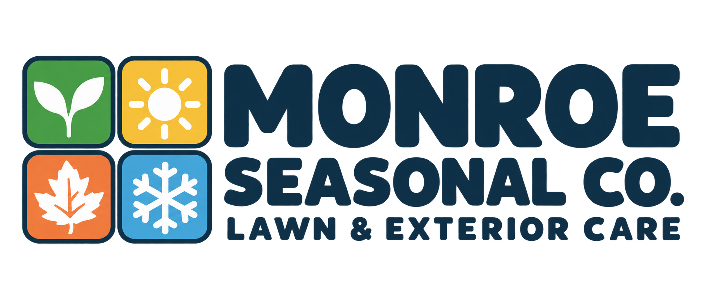

Spring
Fresh starts & yard cleanup

Friendly faces. Hands-on help. A brighter lawn-care identity that brings spring, summer, fall, and winter together.
Four seasons. One local crew.
Lawn & Exterior Care · Bloomington & Monroe CountyDownload the transparent logoFresh starts & yard cleanup

Lawns & outdoor spaces

Leaves & yard debris
Snow & holiday lights
Select a color to copy it. Use white as the main canvas, navy for readable text, and season colors for personality.
Rounded and approachable. Use sentence case, short headlines, and a confident weight. Desktop: 52–64px. Mobile: 38–44px.
Keep service descriptions clear and conversational. Use 16–18px body text, 1.6 line spacing, and bold labels for next steps.
From mowing and leaf cleanup to snow removal and holiday lights, we're your local student crew for the jobs outside.
Yard cleanup
Stick & debris pickup
Mowing
Windows & pressure washing
Leaf removal
Single-story gutters
Snow removal
Tree & bush lighting
Website style preview. Links navigate within this kit; it is not a booking site. Add a real photo of your student crew and real before-and-after photos when available.
We'll handle the leaves, sticks, and small yard debris. Book a one-time cleanup or schedule repeat visits through the season.
Get a cleanup quote ↗Tell us what needs doing and send a few photos to get your estimate started.
Form styling preview. Nothing entered here is sent or saved.
Helpful, casual, and specific. “Send us a few photos.” “We'll take care of the leaves.” “Let's get your yard cleaned up.” Use short, natural sentences.
Your student crew with your pickup and equipment, real work in progress, and clear before-and-after photos. Natural light, normal work clothes, and honest results.
White backgrounds, bold navy text, friendly rounded corners, and colorful seasonal details. Pair every season color with its symbol and name.
“Hey, we're the students behind Monroe Seasonal Co. We're IU students helping our neighbors around Bloomington and Monroe County tackle lawn care, cleanups, and the outdoor jobs that pile up with the seasons.”
The primary logo is a generated raster asset. Companion seasonal icons are editable vectors; they are not a vector conversion of the generated logo. Fonts and their open-source licenses are included.
Logo · Four-season graphics · Fonts · Colors · Website styles · Copy